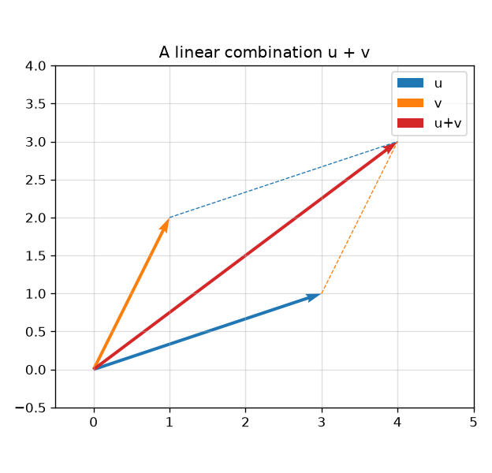
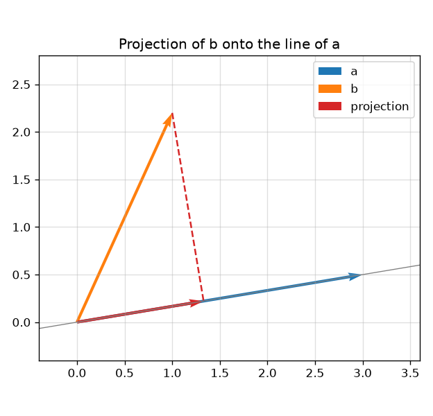
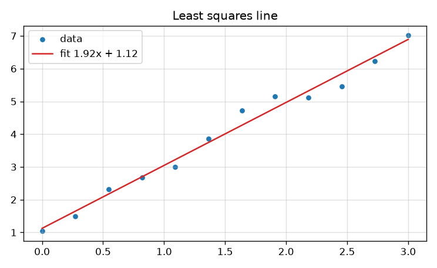
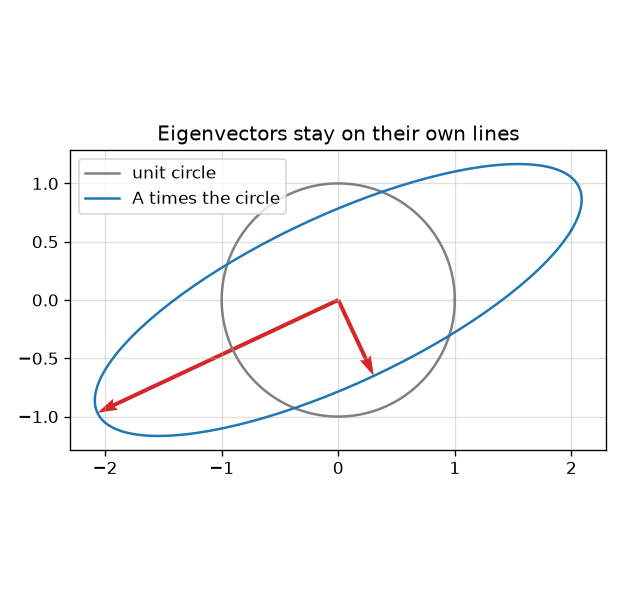
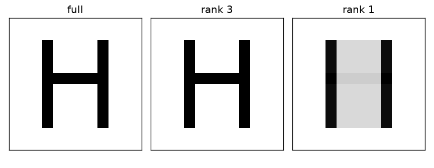

2.1 Linear Algebra
Introduction to Linear Algebra, Sixth Edition
Created Date: 2025-05-10
"Introduction to Linear Algebra, Sixth Edition" primarily by Gilbert Strang, is a widely adopted textbook that offers a comprehensive and accessible guide to the study of linear algebra. This edition aims to combine rigorous mathematical concepts with a clear and gentle teaching approach, making it suitable for students across various quantitative fields, including engineering, science, economics, and business.
2.1.1 Vectors and Matrices
A neural network stores its weights in arrays. The algebra of those arrays is linear algebra: vectors, linear combinations, and matrix products. The file simple_matrix.py builds one small example,
a = torch.tensor([[1, 2, 3], [4, 5, 6]])
print('Shape of a:', a.shape) # torch.Size([2, 3])demo_linear_algebra_figures.py checks that same matrix and draws the figures below. Gilbert Strang's Introduction to Linear Algebra is the full course; this page keeps the ideas the later chapters multiply together.
2.1.1.1 Vectors and Linear Combinations
A vector in \(\mathbb{R}^n\) is an ordered list of \(n\) numbers. Two vectors of the same length add component by component, and a scalar \(c\) multiplies every component. A linear combination of vectors \(u\) and \(v\) is \(cu + dv\).
The picture is the parallelogram rule. Place the tail of \(v\) on the head of \(u\), and the diagonal is \(u+v\). Every later operation in this chapter — a matrix times a vector, a layer in a network — is a linear combination of columns.

Figure 1 - The combination \(u+v\)
2.1.1.2 Lengths and Angles from Dot Products
The dot product of \(u = (u_1, \ldots, u_n)\) and \(v = (v_1, \ldots, v_n)\) is \(u \cdot v = u_1 v_1 + \cdots + u_n v_n\). The length is \(\|u\| = \sqrt{u \cdot u}\). The angle \(\theta\) between two nonzero vectors satisfies
So \(u \cdot v = 0\) means the vectors are perpendicular. Cosine similarity, used to compare embeddings, is this formula solved for \(\cos \theta\). In PyTorch the same product on two 1-D tensors is torch.dot; on batches of rows it is a matrix product.
2.1.1.3 Matrices and Their Column Spaces
An \(m \times n\) matrix \(A\) is \(n\) column vectors stacked side by side, each of length \(m\). The column space \(C(A)\) is the set of every linear combination of those columns. It is a subspace of \(\mathbb{R}^m\).
For the matrix in simple_matrix.py,
the columns live in \(\mathbb{R}^2\). The third column is \(2\) times the second minus the first, so the column space is only a plane's worth of \(\mathbb{R}^2\) spanned by two of the columns — in fact those two already span all of \(\mathbb{R}^2\). The rank is the dimension of the column space. Here the rank is \(2\).
2.1.1.4 Matrix Multiplication \(AB\) and \(CR\)
The product \(Ax\) is the linear combination of the columns of \(A\) with weights taken from \(x\). If \(A\) is \(m \times n\) and \(x\) is \(n \times 1\), then \(Ax\) is \(m \times 1\). Multiplying \(A\) by a matrix \(B\) with columns \(b_1, \ldots, b_p\) just does this once per column: the columns of \(AB\) are \(Ab_1, \ldots, Ab_p\).
One factorization writes \(A\) as \(CR\), where the columns of \(C\) are a basis for the column space and each column of \(R\) holds the coefficients of the matching column of \(A\). For the \(2 \times 3\) example, \(C\) can be the first two columns and \(R\) is \(2 \times 3\). Rank is the number of columns in \(C\). Every matrix product you will write in a linear layer is this column combination, computed for a whole batch at once.
2.1.2 Solving Linear Equations
\(Ax = b\) asks for the weights \(x\) that combine the columns of \(A\) into the vector \(b\). A solution exists exactly when \(b\) is in the column space. It is unique exactly when the nullspace of \(A\) contains only the zero vector.
2.1.2.1 Elimination and Back Substitution
Elimination clears a column at a time. Subtract a multiple of one row from a row below it so a leading entry becomes the only nonzero in that column. On a \(2 \times 2\) system \(x + 2y = 5\), \(3x + 4y = 6\), subtract \(3\) times the first row from the second to get \(-2y = -9\), so \(y = 9/2\), and back substitution gives \(x = 5 - 2y = -4\). The same steps, organized, are Gaussian elimination. Back substitution starts at the bottom pivot and works upward.
2.1.2.2 Elimination Matrices and Inverse Matrices
Each elimination step is itself a matrix multiplication. The matrix that subtracts \(3\) times row 1 from row 2 is
The inverse \(A^{-1}\) is the matrix with \(A^{-1}A = I = AA^{-1}\). It exists only for square matrices of full rank. Then \(x = A^{-1}b\) is the unique solution. You almost never form \(A^{-1}\) in code: solving \(Ax = b\) by elimination is faster and more accurate. A linear layer does not invert its weight matrix; it multiplies.
2.1.2.3 Matrix Computations and \(A = LU\)
If elimination needs no row exchanges, \(A = LU\): \(L\) is lower triangular with ones on the diagonal and the multipliers under it, and \(U\) is the upper triangular matrix elimination produced. Solving \(Ax = b\) becomes two triangular solves, \(Lc = b\) then \(Ux = c\). The cost of building \(LU\) is about \(\frac{2}{3}n^3\) operations for an \(n \times n\) matrix, after which each new right-hand side is cheap. This is the factorization a dense linear solver uses.
2.1.2.4 Permutations and Transposes
When a pivot is zero, or dangerously small, elimination swaps rows. A permutation matrix \(P\) does that swap. The factorization becomes \(PA = LU\). The transpose \(A^{\mathsf T}\) mirrors \(A\) across the main diagonal, so \((A^{\mathsf T})_{ij} = A_{ji}\). It obeys \((AB)^{\mathsf T} = B^{\mathsf T} A^{\mathsf T}\). In a network, transposing a weight matrix is how a linear map is applied to a batch stored as rows instead of columns: x @ W.T in PyTorch is the row-vector convention of nn.Linear.
2.1.3 The Four Fundamental Subspaces
Every \(m \times n\) matrix \(A\) produces four subspaces. Two live in \(\mathbb{R}^n\): the row space and the nullspace. Two live in \(\mathbb{R}^m\): the column space and the left nullspace. Their dimensions are tied to the rank, and that accounting is the most useful fact in the subject.
2.1.3.1 Vector Spaces and Subspaces
A subspace of a vector space is a set that contains the zero vector and is closed under addition and scalar multiplication. \(\mathbb{R}^n\) itself is a vector space. A line through the origin in \(\mathbb{R}^2\) is a subspace; a line that misses the origin is not, because it has no zero vector. Column spaces, nullspaces, and eigenspaces are subspaces. The set of solutions of \(Ax = b\) is a subspace only when \(b = 0\).
2.1.3.2 Computing the Nullspace by Elimination: \(A = CR\)
The nullspace \(N(A)\) is every \(x\) with \(Ax = 0\). Elimination finds it. Reduce \(A\) to a row echelon form, mark the pivot columns, and let each free variable (a column without a pivot) take the value \(1\) in turn while the others are \(0\). Back substitution produces one special solution per free variable, and those special solutions span the nullspace.
The factorization \(A = CR\) makes the count obvious. \(C\) holds the pivot columns, \(R\) is the reduced description of how every column is built from those pivots, and the nullspace of \(A\) equals the nullspace of \(R\). For the running \(2 \times 3\) matrix there is one free variable, so the nullspace is a line in \(\mathbb{R}^3\).
2.1.3.3 The Complete Solution to \(Ax = b\)
If \(b\) is in the column space, pick any one particular solution \(x_p\). The complete solution is that particular solution plus the whole nullspace:
If \(b\) is not in the column space there is no solution. Training almost always sits in that second case: more equations than unknowns, no exact \(x\), and the next section replaces "solve" with "come as close as possible."
2.1.3.4 Independence, Basis, and Dimension
Vectors \(v_1, \ldots, v_k\) are linearly independent when \(c_1 v_1 + \cdots + c_k v_k = 0\) forces every \(c_i = 0\). A basis of a subspace is an independent set that still spans it. The dimension is the number of vectors in any basis; all bases of one subspace have the same number. The pivot columns of \(A\) are a basis for the column space, and the special nullspace solutions are a basis for the nullspace.
2.1.3.5 Dimensions of the Four Subspaces
Let \(A\) be \(m \times n\) with rank \(r\). Then
The column space and the row space both have dimension \(r\).
The nullspace has dimension \(n - r\).
The left nullspace \(N(A^{\mathsf T})\) has dimension \(m - r\).
The row space is perpendicular to the nullspace, and the column space is perpendicular to the left nullspace. Those two orthogonalities are why a least-squares residual ends up perpendicular to the column space.
2.1.4 Orthogonality
Orthogonal means perpendicular: a dot product of zero. Orthogonal bases make projections, least squares, and the SVD into short formulas, because the cross terms drop out.
2.1.4.1 Orthogonality of Vectors and Subspaces
Two subspaces are orthogonal when every vector in one is orthogonal to every vector in the other. For any \(A\), the nullspace is orthogonal to the row space, and the left nullspace is orthogonal to the column space. An orthogonal set of nonzero vectors is automatically independent. If the set is also a basis and each vector has length \(1\), it is an orthonormal basis, and coordinates are just dot products.
2.1.4.2 Projections onto Lines and Subspaces
The projection of a vector \(b\) onto the line spanned by a nonzero vector \(a\) is the closest point on that line to \(b\):
The error \(b - p\) is perpendicular to \(a\). Onto a subspace with basis in the columns of \(A\), the same geometry gives the projection matrix \(P = A(A^{\mathsf T} A)^{-1} A^{\mathsf T}\), and \(p = Pb\), provided the columns are independent. The dashed segment in the figure is the error, and it meets the line at a right angle.

Figure 2 - Projection onto a line
2.1.4.3 Least Squares Approximations
When \(Ax = b\) has no solution, least squares looks for the \(\hat x\) that minimizes \(\|Ax - b\|^2\). The error \(b - A\hat x\) must be perpendicular to the column space, which is the normal equation
Fitting a line \(y = mx + c\) to more than two points is this equation with one column of \(A\) holding the \(x\)-coordinates and one column of ones. The figure is that fit. Linear regression, and the last linear layer of a network trained with squared error, are the same normal equation. With millions of rows you do not form \(A^{\mathsf T} A\); you descend on the squared error instead, which is chapter 1.6.

Figure 3 - Least squares fit of a line
2.1.4.4 Orthonormal Bases and Gram-Schmidt
Gram-Schmidt starts with independent vectors \(a, b, c, \ldots\) and produces orthonormal vectors \(q_1, q_2, q_3, \ldots\). Subtract from each new vector its projections onto the \(q\)'s already built, then divide by the length of what remains. In matrix form the result is \(A = QR\), where \(Q\) has orthonormal columns and \(R\) is upper triangular. Least squares becomes \(R\hat x = Q^{\mathsf T} b\), a back substitution, with no \(A^{\mathsf T} A\) to square the condition number.
2.1.4.5 The Pseudoinverse of a Matrix
A full-rank tall matrix has the left inverse \((A^{\mathsf T} A)^{-1} A^{\mathsf T}\), and \(\hat x = A^{+} b\) is the least-squares solution. A full-rank wide matrix has the right inverse \(A^{\mathsf T}(AA^{\mathsf T})^{-1}\), and \(x = A^{+} b\) is the solution of smallest length. The Moore-Penrose pseudoinverse \(A^{+}\) covers every rank, including rank-deficient matrices, and it is built from the SVD in section 2.1.7: invert the nonzero singular values and leave the zeros alone. It is the linear map that sends \(b\) to the shortest least-squares solution.
2.1.5 Determinants
The determinant \(\det A\) is a single number attached to a square matrix. It is zero exactly when \(A\) is singular. For a \(2 \times 2\) matrix it is \(ad - bc\).
2.1.5.1 3 by 3 Determinants and Cofactors
A \(3 \times 3\) determinant expands along a row. The cofactor \(C_{ij}\) is \((-1)^{i+j}\) times the determinant of the \(2 \times 2\) matrix left after deleting row \(i\) and column \(j\). Expanding along the first row,
Any row or column works. The cofactor formula also builds the inverse: \(A^{-1} = \frac{1}{\det A} C^{\mathsf T}\), where \(C\) is the matrix of cofactors. That formula is for \(3 \times 3\) homework. Larger inverses come from elimination.
2.1.5.2 Computing and Using Determinants
Three facts make determinants usable. A triangular matrix has determinant equal to the product of its diagonal entries, so after \(PA = LU\) you multiply the pivots and account for the row swaps. \(\det(AB) = \det A \,\det B\), and \(\det(A^{\mathsf T}) = \det A\). The product of the eigenvalues of \(A\) equals \(\det A\), which is why a zero eigenvalue and a zero determinant describe the same singular matrix.
2.1.5.3 Areas and Volumes by Determinants
If the columns of a \(2 \times 2\) matrix are two edges of a parallelogram, \(|\det A|\) is the area of that parallelogram. In \(3 \times 3\), \(|\det A|\) is the volume of the parallelepiped. A singular matrix has dependent columns, the parallelogram collapses, and the area is zero. A linear transformation multiplies every area by \(|\det A|\). That is the Jacobian factor when a change of variables hits an integral, including the change-of-variables formula inside a normalizing flow.
2.1.6 Eigenvalues and Eigenvectors
An eigenvector of \(A\) is a nonzero vector that \(A\) only stretches or flips, and the eigenvalue \(\lambda\) is the stretch factor: \(Ax = \lambda x\). Directions that a layer preserves are the directions you can study one at a time.
2.1.6.1 Introduction to Eigenvalues : \(Ax = λx\)
Rearrange \(Ax = \lambda x\) to \((A - \lambda I)x = 0\). A nonzero \(x\) exists only when \(A - \lambda I\) is singular, so the eigenvalues are the roots of the characteristic polynomial \(\det(A - \lambda I) = 0\). A \(2 \times 2\) matrix has two eigenvalues, counting complex roots and repeats. The trace (sum of the diagonal) equals the sum of the eigenvalues, and the determinant equals their product.
The figure sends the unit circle through a symmetric matrix. The image is an ellipse. The red arrows are the eigenvectors, scaled by their eigenvalues: each stays on its own line, and those lines are the long and short axes of the ellipse.

Figure 4 - Eigenvectors are the axes of the image ellipse
2.1.6.2 Diagonalizing a Matrix
If \(A\) has \(n\) independent eigenvectors, pack them into the columns of \(S\). Then \(AS = S\Lambda\), where \(\Lambda\) is the diagonal matrix of eigenvalues, and
Powers become easy: \(A^k = S \Lambda^k S^{-1}\), and \(\Lambda^k\) just powers the diagonal. A matrix with a repeated eigenvalue and too few eigenvectors (a Jordan block) is not diagonalizable. Symmetric matrices always are.
2.1.6.3 Symmetric Positive Definite Matrices
A symmetric matrix equals its transpose. Its eigenvalues are real and its eigenvectors can be chosen orthonormal, so \(A = Q \Lambda Q^{\mathsf T}\). It is positive definite when every eigenvalue is positive, equivalently when \(x^{\mathsf T} A x > 0\) for every \(x \ne 0\). Then \(A\) defines a bowl-shaped quadratic \(f(x) = \frac{1}{2} x^{\mathsf T} A x - b^{\mathsf T} x\), whose unique minimum solves \(Ax = b\). Hessian matrices of losses are the deep-learning version of this test: positive definite at a critical point means a local minimum.
2.1.6.4 Complex Numbers and Vectors and Matrices
A real matrix can have complex eigenvalues. They arrive in conjugate pairs. A rotation by \(\theta\) in the plane has eigenvalues \(e^{\pm i\theta} = \cos \theta \pm i \sin \theta\) and no real eigenvector: every real vector is turned. The Hermitian transpose \(A^{\mathsf H}\) conjugates and transposes. Complex inner products use \(\bar u \cdot v\), so lengths stay real. Fourier features and some recurrent updates are complex multiplications of this kind; the algebra is the same as the real case once conjugation is part of the transpose.
2.1.6.5 Solving Linear Differential Equations
The system \(du/dt = Au\) with a diagonalizable \(A = S\Lambda S^{-1}\) decouples. Change variables to \(v = S^{-1} u\), and each coordinate satisfies \(dv_i/dt = \lambda_i v_i\), so \(v_i(t) = v_i(0)\, e^{\lambda_i t}\). The solution grows where \(\lambda\) has positive real part and decays where the real part is negative. A discrete step \(u_{k+1} = Au_k\) does the same with \(\lambda^k\) in place of \(e^{\lambda t}\). Recurrent nets and diffusion schedules are discrete linear updates; their stability is the size of these eigenvalues.
2.1.7 The Singular Value Decomposition (SVD)
Eigenvalues need a square matrix. The SVD factors every \(m \times n\) matrix, square or not.
2.1.7.1 Singular Values and Singular Vectors
Any \(A\) can be written
where \(U\) and \(V\) have orthonormal columns and \(\Sigma\) is diagonal with nonnegative entries \(\sigma_1 \ge \sigma_2 \ge \cdots \ge 0\), the singular values. The columns of \(V\) are eigenvectors of \(A^{\mathsf T} A\), the columns of \(U\) are eigenvectors of \(AA^{\mathsf T}\), and \(\sigma_i^2\) are the matching eigenvalues. The number of nonzero singular values is the rank. The pseudoinverse inverts each positive \(\sigma_i\) and transposes the factors.
2.1.7.2 Image Processing by Linear Algebra
An image is a matrix. The SVD writes it as a sum of rank-one images, \(A = \sum_i \sigma_i u_i v_i^{\mathsf T}\), and the first terms carry the most energy. Keeping the first \(k\) singular values is the best rank-\(k\) approximation in the Frobenius norm. The figure is a block letter H: the rank-3 truncation still reads as H, and the rank-1 truncation keeps only a blur of the vertical strokes.

Figure 5 - Truncating the SVD
The same truncation compresses a weight matrix. Keeping the top singular components is a structured way to shrink a linear layer, related to the low-rank updates in the LoRA chapter, which add a learned rank-\(k\) correction instead of deleting small singular values.
2.1.7.3 Principal Component Analysis (PCA by the SVD)
PCA looks for the directions in which a data matrix varies the most. Center the columns (subtract the mean of each feature), then take the SVD. The first right singular vectors are the principal components, and \(\sigma_i^2\) measures the variance along component \(i\). Projecting the rows onto the first \(k\) components is the rank-\(k\) approximation above. That projection is a linear way to drop from hundreds of features to a handful before a smaller model sees the data.
2.1.8 Linear Transformations
A linear transformation \(T\) satisfies \(T(cu + dv) = c\,T(u) + d\,T(v)\). Once a basis is chosen, every linear transformation is a matrix, and every matrix is a linear transformation. Changing the basis changes the matrix, not the transformation.
2.1.8.1 The Idea of a Linear Transformation
Rotation, reflection, projection, and scaling are linear. Translation is not: \(T(0)\) would have to be \(0\), and a shift moves the origin. A fully connected layer without a bias is linear. The bias is a translation, and the activation that follows is nonlinear. The stack is what lets a network bend; a product of linear maps alone collapses back into one matrix.
2.1.8.2 The Matrix of a Linear Transformation
Pick a basis. The first column of the matrix is \(T\) applied to the first basis vector, written in that same basis, and likewise for the other columns. In the standard basis of \(\mathbb{R}^2\), rotation by \(90^\circ\) counterclockwise sends \((1, 0)\) to \((0, 1)\) and \((0, 1)\) to \((-1, 0)\), so the matrix is \(\begin{bmatrix} 0 & -1 \\ 1 & 0 \end{bmatrix}\). Compose transformations by multiplying the matrices, in the order the maps are applied.
2.1.8.3 The Search for a Good Basis
The standard basis is convenient and rarely aligned with the problem. Eigenvectors diagonalize a square transformation. Singular vectors diagonalize a rectangular one. An orthonormal basis from Gram-Schmidt makes dot products into ordinary sums of coordinate products. In data, the PCA basis aligns the coordinates with variance. "A good basis" means the matrix of the transformation, or of the data, is diagonal or nearly so, and the remaining work is one coordinate at a time.
2.1.9 Linear Algebra in Optimization
Training is an optimization problem whose unknowns are the entries of weight matrices. Calculus supplies the derivative; linear algebra supplies the object the derivative is taken with respect to.
2.1.9.1 Minimizing a Multivariable Function
For \(f: \mathbb{R}^n \to \mathbb{R}\), the gradient \(\nabla f\) is the vector of partial derivatives. It points in the direction of steepest increase, so \(-\nabla f\) is the downhill direction. At an interior local minimum the gradient is zero. The Hessian matrix \(H\) of second partials is symmetric. If it is positive definite at a critical point, that point is a local minimum, and the level sets of \(f\) near it are ellipsoids whose axes are the eigenvectors of \(H\). A long thin ellipsoid is why a plain gradient step crawls along the flat direction.
2.1.9.2 Backpropagation and Stochastic Gradient Descent
A network is a composition of maps, many of them linear. Backpropagation evaluates the chain rule from the scalar loss back through each map, and for a linear map the local piece of that chain rule is a matrix product. If a layer computes \(z = Wx\), the gradient with respect to \(W\) is an outer product of the upstream gradient and \(x\).
Stochastic gradient descent does not use the whole dataset for that product. It averages the gradient on a small batch and steps
where \(\eta\) is the learning rate and the hat means "this batch." The algebra is still the calculus of section 1.5 and the products of this chapter. The optimizer chapter adds momentum and adaptive step sizes on top of the same update.
2.1.9.3 Constraints, Lagrange Multipliers, Minimum Norms
Some problems ask for a minimum on a surface rather than in free space. To minimize \(f(x)\) subject to \(g(x) = 0\), look for a point where the two gradients are parallel:
The scalar \(\lambda\) is the Lagrange multiplier. The shortest vector that maps to a given \(b\), that is \(\min \|x\|\) subject to \(Ax = b\), is the pseudoinverse solution from section 2.1.4.5. Weight decay, \(\|W\|^2\) added to the loss, is the unconstrained cousin of that minimum-norm preference.
2.1.9.4 Linear Programming, Game Theory, and Duality
A linear program minimizes \(c^{\mathsf T} x\) subject to \(Ax \le b\) and \(x \ge 0\). The optimum is at a corner of the feasible polyhedron. The dual program swaps the role of constraints and variables, and a feasible pair with equal objective values certifies optimality. A two-player zero-sum game is a linear program: the row player picks a probability vector \(p\), the column player picks \(q\), and the expected payoff is \(p^{\mathsf T} A q\). The minimax theorem says the best guaranteed payoff is the same no matter who commits first. Training a GAN is a harder, non-linear version of that game. Duality shows up again when a constrained problem is easier to solve through its dual, which is the idea behind support-vector machines.
2.1.10 Learning from Data
The matrices above become a learning algorithm once the entries are chosen to make \(A\) agree with examples. This section is that step, still with small linear pieces.
2.1.10.1 Piecewise Linear Learning Functions
A single matrix applies one linear map everywhere. A network inserts a hinge, the ReLU \(\max(0, x)\), between linear maps. On each region where a fixed set of ReLUs is active, the whole network collapses to one affine function \(Wx + b\). Crossing into another region switches which rows of \(W\) survive. The learned function is continuous and piecewise linear. That is why a deep ReLU network can bend a decision boundary that one matrix cannot, and why the next chapter can separate points that are not linearly separable by stacking one hidden layer.
2.1.10.2 Creating and Experimenting
The experiment that matches this chapter is small enough to finish by least squares. Build the \(2 \times 3\) matrix from simple_matrix.py, multiply it by a vector, and check the product against the column combination. Then fit a line to a handful of points with numpy.linalg.lstsq and compare the slope with \(2\), which is the assert in demo_linear_algebra_figures.py. When the line is not enough, the following chapter replaces the closed-form solve with a two-layer network and a training loop. Keep the matrix small until the shapes in the error message make sense; a shape mismatch is a failed matrix product, not a mysterious training failure.
2.1.10.3 Mean, Variance, and Covariance
For numbers \(x_1, \ldots, x_n\), the mean is \(\bar x = \frac{1}{n}\sum_i x_i\) and the variance is the mean squared distance to it. For two coordinates stored as columns of a data matrix, the covariance is
The covariance matrix of a dataset has those entries for every pair of features. It is symmetric and positive semidefinite. Its eigenvectors are the PCA directions from section 2.1.7.3, and a batch-normalization layer is a learned rescaling of related diagonal statistics. Section 6.1 computes the same mean and variance by hand for a short list of numbers, then uses them inside a normal density.